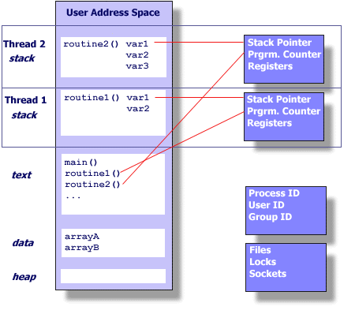

thread编程
thread基础简介
线程为可以被操作系统调度独立的指令流集，一个进程或程序有多个线程，每个线程可以被操作系统进行同步或独立调度
线程操作
- 创建
- 终止
- 同步
- 调度
- 数据管理
- 进程交互
线程的特点
一个线程既不会保持一系列它所创建的线程，也不会知道已经创建的线程
一个进程的所有线程共享同样的地址空间
同一个进程下的所有线程共享：
- 程序指令集（代码段）
- 大部分的数据
- 打开文件（文件描述符）
- 信号和信号句柄
- 当前的工作路径
- 用户和组号
每个线程特有：
- 线程号(thread ID)
- 寄存器集，栈指针
- 本地变量的栈，以及返回的地址
- 信号掩码(signal mask)
- 优先级(priority)
- 返回值 value:errno
如果线程函数正确，则返回0

Process 内存示意图

Thread 内存示意图
总结
- 线程使用所属进程的资源
- 只要有其所属进程支持和操作系统的调度，线程就会有它独立的控制流
- 复制独立调度的必要资源
- 与其它兄弟线程共享所属进程资源并且都可以独立的运行
- 随着所属进行的消亡而消亡
- 线程是轻量级的，因为大部分资源在创建进程的时候就已经创建
因为线程之前是共享资源的，多个线程可以同时读写相同的位置或文件，所以就需要显示的使用线程之前的同步机制
多线程编程的设计
程序可以被设计为并行编程的特质
- 程序和数据可以被多个任务同时执行
- 具有潜在的较长时间的I/O等待阻塞
- 必须回应异步事件
共享内存模型

- 所有的线程可以访问相同的全局共享内存
- 每个线程都具有自身的私有变量
- 程序员主要维护或同步多线程对共享资源的访问
线程安全
Tread-safeness:要求多线程访问共享内存时不破坏共享内存数据，也不会发生竞争情况(race condition)
线程限制
- 尽管Pthreads API是ANSI/IEEE的标准，但是通常有些地方的实现，有所不同
- 在设计程序为多线程时，允许的最大线程数和默认线程栈是两个重要的考虑因素
多线程编程
Pthread API
线程的API通常由以下4部分组成
- 线程管理(Thread management):直接在线程上面的操作（creating detaching joining）
- 互斥量(Mutexes):处理线程同步的手段，提供了(creating destroying locking unlocking mutexes)相关函数
- 条件变量(Condition variables):处理共享一个互斥量之间线程交互的地址。通常处理特殊的情况，包含了(creat destory wait signal)等函数
- 同步(Synchronization):处理读写锁或其它的同步障碍
线程管理
线程创建
int pthread_create (thread,attr,start_routine,arg);- thread: 线程标识符
- attr: 设置线程的属性,没有则设置为NULL
- start_routine: 所要运行的函数
- arg: 向线程中传递的参数
可以通过 ulimit 或者 limit 查看限制
线程属性
- 在默认情况下，线程的创建带有特定的属性。一些属性可以通过修改attribute object改变
- pthread_attr_init 和 pthread_attr_destroy 函数通常用来初始化和删除线程属性对象
线程中止
在main()函数中，执行pthread_exit意味着，main()将会等待并一直支持着所有线程运行结束。
联合分离线程
xpthread_join (threadid,status)pthread_detach (threadid)pthread_attr_setdetachstate (attr,detachstate)pthread_attr_getdetachstate (attr,detachstate)
join函数是实现线程同步的一种方式，如下图所示：

- 使用pthread_join()主线程会阻塞，直到相应的线程结束
- 可以通过在创建线程时，设置attr属性，来确定一个线程是joinable或detached
- 如果一个线程在创建的时候属性为detached，则该线程就不会使用join
- 使用pthread_detach()显式的分离一个线程尽管它创建时是joinable属性
线程同步
互斥量(mutex)
xxxxxxxxxxpthread_mutex_lock (mutex)pthread_mutex_trylock (mutex)pthread_mutex_unlock (mutex)
- pthread_mutex_lock:由线程使用用来对特定的互斥量上锁。如果当前互斥量已经被其它的线程锁住则当前线程被阻塞，直到释放互斥量的锁
- pthread_mutex_unlock:释放当前线程拥有的特定的互斥量。如果释放的互斥量的拥有着不是当前线程或者该互斥量已经被释放则会发生错误
条件变量(condition variables)
xxxxxxxxxxpthread_cond_init (condition,attr)pthread_cond_destroy (condition)pthread_condattr_init (attr)pthread_condattr_destroy (attr)pthread_cond_wait (condition,mutex)pthread_cond_signal (condition)pthread_cond_broadcast (condition)
条件变量提供了另一种线程同步的机制，互斥量实现线程同步是通过了对访问数据区（共享区）的权限控制，条件变量通过依据数据实际的值来实现线程同步。通常互斥量和条件变量结合使用。
条件变量使用前必须初始化
- 静态初始化:pthread_cond_t myconvar = PTHREAD_COND_INITIALIZER;
- 动态初始化: pthread_cond_init()
pthread_cond_wait():
线程同步的经典例子，生产者消费者
Reference